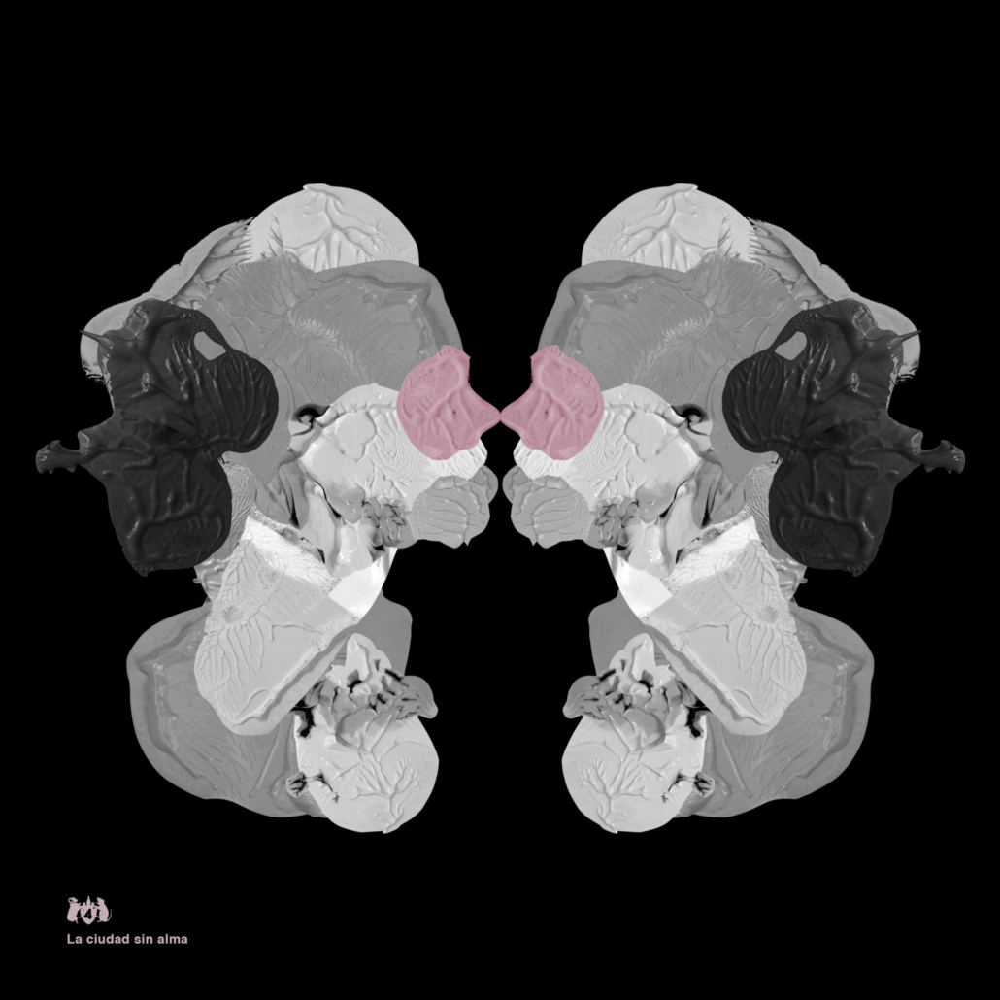

El Cuarteto de Nos presenta “La Ciudad sin Alma”, su nuevo sencillo
Esta canción refleja el momento caótico y de incertidumbre en el que vivimos, pero también sugiere que algo nuevo siempre puede renacer. En su letra, se encuentran conceptos como “infierno zen” y “bienestar violento”, que disparan imágenes de nuestra propia cotidianidad.